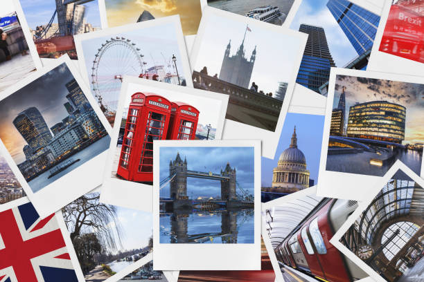
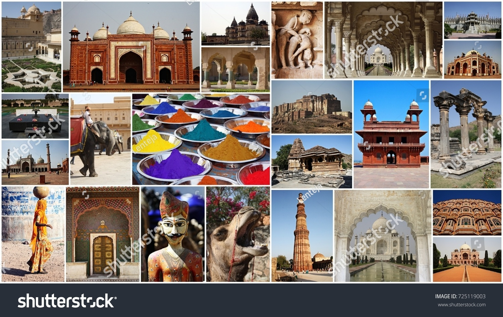

Popular Destinations
Paris
Experience the City of Lights with its stunning architecture and rich culture.Paris, the City of Light, enchants visitors with its timeless elegance and vibrant culture. Stroll along the iconic Seine River, where picturesque bridges connect charming neighborhoods. Marvel at the architectural splendor of the Eiffel Tower and the historic grandeur of Notre-Dame Cathedral. Art lovers will find paradise in the Louvre, home to masterpieces like the Mona Lisa, while the bohemian spirit of Montmartre invites exploration of its quaint streets and bustling cafés. Indulge in world-renowned cuisine, from flaky croissants to gourmet dining experiences, and immerse yourself in the city's rich history and modern flair. Whether you're sipping espresso in a sidewalk café or gazing at the twinkling skyline at sunset, Paris promises unforgettable memories.
New York

The city that never sleeps, filled with iconic landmarks and vibrant life.New York City, often hailed as the "Big Apple," is a vibrant metropolis that pulses with energy and creativity. From the iconic skyline dominated by the Empire State Building to the serene green expanse of Central Park, the city's contrasts are what make it truly unique. Explore world-class museums like the Metropolitan Museum of Art and the Museum of Modern Art, or wander through the diverse neighborhoods of Brooklyn, Queens, and Manhattan, each offering its own distinct flavor. Savor culinary delights from street vendors and Michelin-starred restaurants alike, and immerse yourself in the electric atmosphere of Times Square. With Broadway shows, live music, and an ever-evolving arts scene, New York never sleeps. Whether you're shopping in SoHo, catching a ferry to the Statue of Liberty, or simply enjoying a coffee with a view of the skyline, New York City promises an unforgettable adventure filled with endless possibilities.
Tokyo
A perfect blend of tradition and modernity in Japan's bustling capital.Tokyo, a mesmerizing blend of tradition and innovation, captivates travelers with its dynamic energy and rich cultural heritage. From the serene gardens of the Imperial Palace to the bustling streets of Shibuya, this vibrant metropolis offers a kaleidoscope of experiences. Explore ancient temples like Senso-ji in Asakusa, then dive into the cutting-edge world of Akihabara's tech and pop culture. Savor mouthwatering sushi at Tsukiji Outer Market or enjoy a casual meal in one of the city's many izakayas. With its neon-lit skyline, fashionable districts like Harajuku, and an efficient public transport system, Tokyo invites you to discover its unique neighborhoods, each brimming with charm. Whether you're indulging in a quiet tea ceremony or experiencing the thrill of a bustling arcade, Tokyo promises an unforgettable journey through a city where the past and future coexist in perfect harmony.
London
London, a city steeped in history and brimming with modern vibrancy, offers an unparalleled travel experience. From the majestic Tower of London, where centuries of history unfold, to the bustling streets of Covent Garden, each corner reveals a new story. Explore iconic landmarks such as Buckingham Palace and the Houses of Parliament, or immerse yourself in the cultural treasures of the British Museum and Tate Modern. Stroll along the River Thames for picturesque views, and savor diverse culinary delights in neighborhoods like Borough Market and Soho. With its world-class theaters in the West End, lush green parks, and a dynamic arts scene, London captivates every type of traveler. Whether you’re enjoying afternoon tea in a quaint café or discovering the eclectic markets of Camden, London promises a rich tapestry of experiences that will leave you enchanted.
India
India, a land of diverse cultures and breathtaking landscapes, beckons travelers with its rich tapestry of history and vibrant traditions. From the majestic Himalayas in the north to the serene backwaters of Kerala in the south, each region offers unique experiences. Explore the bustling streets of Delhi, where ancient monuments coexist with modern life, or lose yourself in the colorful markets of Jaipur, known as the Pink City. Indulge in the world-famous cuisine, from spicy street food to exquisite regional dishes, and immerse yourself in festivals that celebrate life and unity. With its warm hospitality and a plethora of adventures, India is a destination that captivates the heart and soul of every visitor.
Germany
Germany, a country steeped in history and innovation, offers travelers a captivating blend of old-world charm and modern vibrancy. From the fairy-tale castles of Bavaria, like Neuschwanstein, to the bustling streets of Berlin, where art and history intertwine, there’s something for everyone. Wander through the picturesque towns of the Romantic Road, savoring local delicacies and fine wines, or explore the stunning landscapes of the Black Forest and the Rhine Valley. Germany's rich cultural scene is highlighted by world-class museums, historic sites, and lively festivals, such as Oktoberfest and the Christmas markets. With efficient transportation and friendly locals, Germany is a welcoming destination that promises unforgettable adventures.